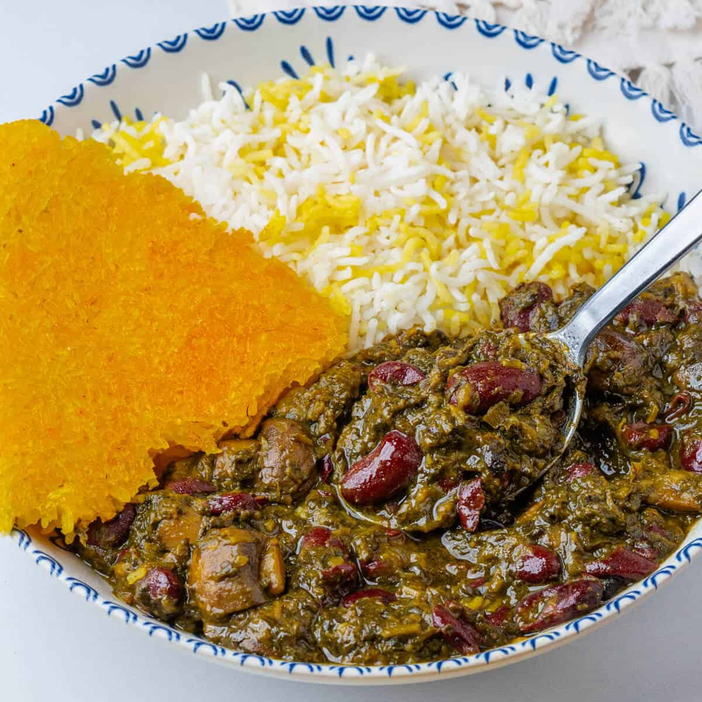

Ghormeh Sabzi

Ghormeh sabzi or Khoresht Sabzi is a traditional Persian herbal stew. It is considered the national dish of Iran and is a very commonly served dish. Ghormeh sabzi has different variants, which are mainly based on the difference between the beans and meat used in the stew.
Ingredients
- Meat: Stew meat (beef or lamb, cubed)
- Aromatics: Yellow onion
- Beans: Red kidney beans (or pinto beans)
- Herbs (the core flavor):Parsley (finely chopped)Cilantro (finely chopped)Chives or green onions (finely chopped)Dried fenugreek leaves (shanbalileh)
- Key Flavoring: Dried Persian limes (limoo amani)
- Spices & Seasoning: Turmeric, salt, black pepper, and cooking oil
- Optional: Fresh lemon juice (for extra tartness)
Steps
- Prep the Limes: Wash the dried Persian limes (limoo amani) and pierce each one a few times with a fork so they can release their flavor. Set them aside in a bowl of warm water to soften.
- Saute the Herbs: In a large skillet over medium heat, fry the finely chopped parsley, cilantro, chives, and fenugreek in oil for 15–20 minutes until they turn dark green and fragrant. (Be careful not to burn them).
- Brown the Meat & Onion: In a separate large pot, heat oil and saute the diced onions until translucent. Add the cubed beef or lamb, turmeric, salt, and pepper, and cook until the meat is browned on all sides.
- Combine & Simmer: Add the fried herbs and the soaked kidney beans into the pot with the meat. Pour in enough water to cover everything by about an inch.
- Add Limes & Slow-Cook: Bring the pot to a boil, then reduce the heat to low. Add the pierced dried limes, cover with a lid, and let it simmer for 2 to 2.5 hours until the meat is tender and an oil layer rises to the top.
- Adjust Flavor & Serve: Taste the stew and adjust salt, pepper, or add a splash of lemon juice if you want more tartness. Serve hot over steamed saffron Persian rice (Tahdig).
Home